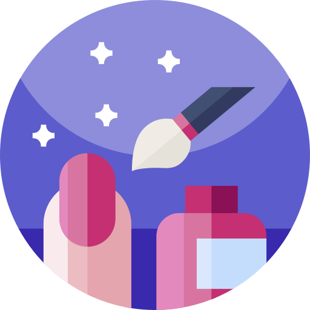

Hello.
I'm a Nail Technician Prosthetic-Stylist, and now on the path towards becoming a Web Developer.
My Skills

Web Design and Development
I started developing both personally and professionally through learning Web Development and I am currently on my path towards adding the skill of programming to my list of assets.

Nail Technician Prosthetic-Stylist
A nail technician is basically a woman or a man (rarely), dealing with the nail's hygiene, maintenance and construction/design for both hands and feet. And basically that's what I do!
Keep in Contact
Discover more about me and my future projects!
We can connect by using the links below.
CONTACT ME